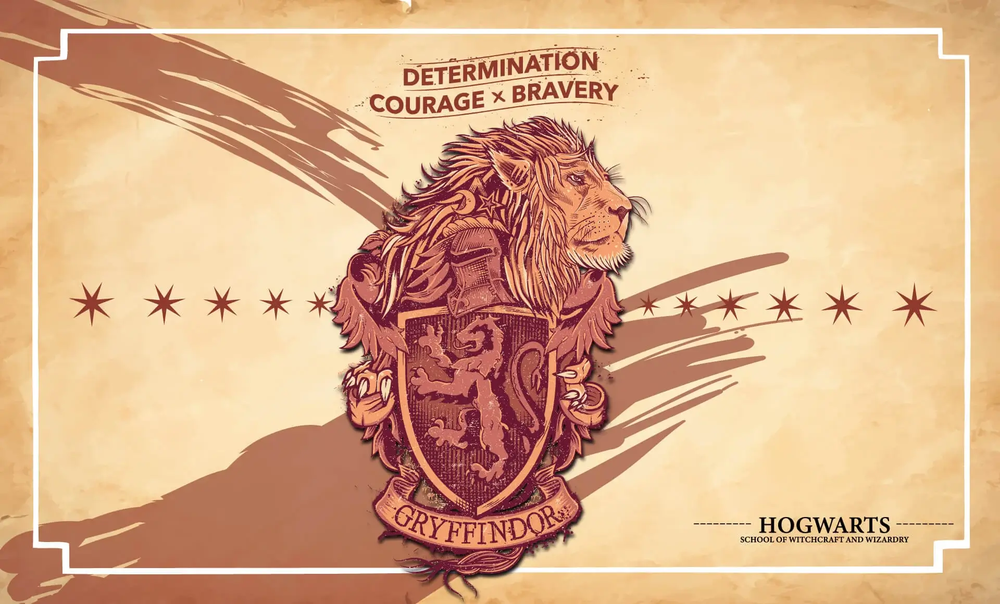

Gryffindor es conocida por su valentía, coraje y determinación. Fundada por Godric Gryffindor, la casa se distingue por sus estudiantes que demuestran una gran capacidad para actuar con heroísmo en tiempos de necesidad. Su color es el rojo, y su animal representativo es el león. Los estudiantes de Gryffindor son valientes y están dispuestos a enfrentarse a cualquier desafío.
La Sala Común de Gryffindor está situada en una torre y se accede a través de un retrato de una dama gorda. Los miembros más destacados de esta casa incluyen a Harry Potter, Hermione Granger y Ron Weasley.
Profesor de la Casa

Minerva McGonagall
Profesora de Transformaciones y Jefa de Gryffindor